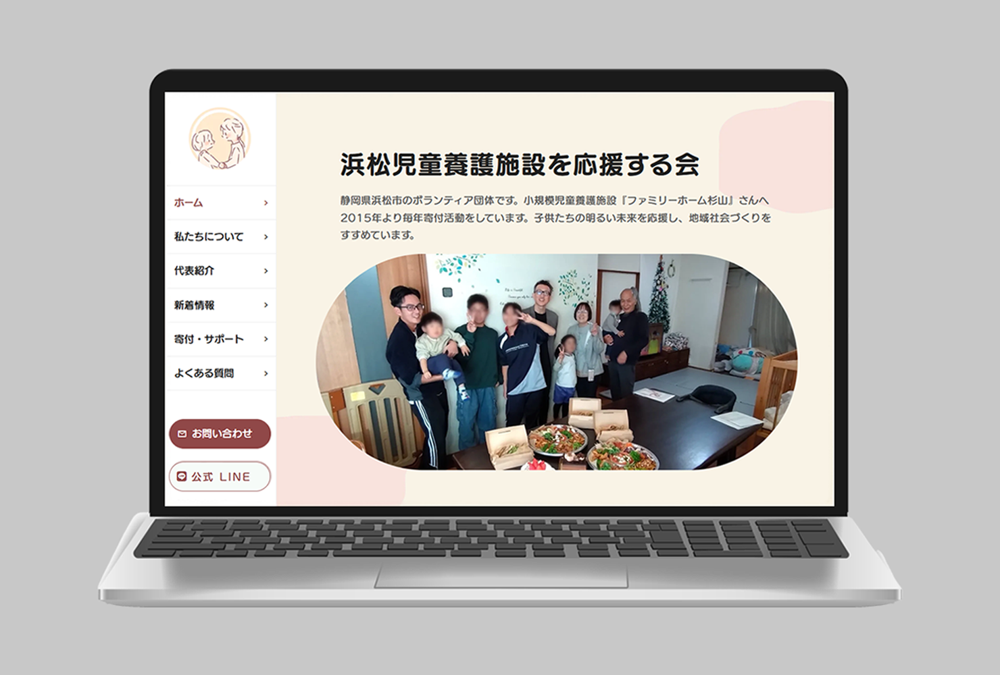
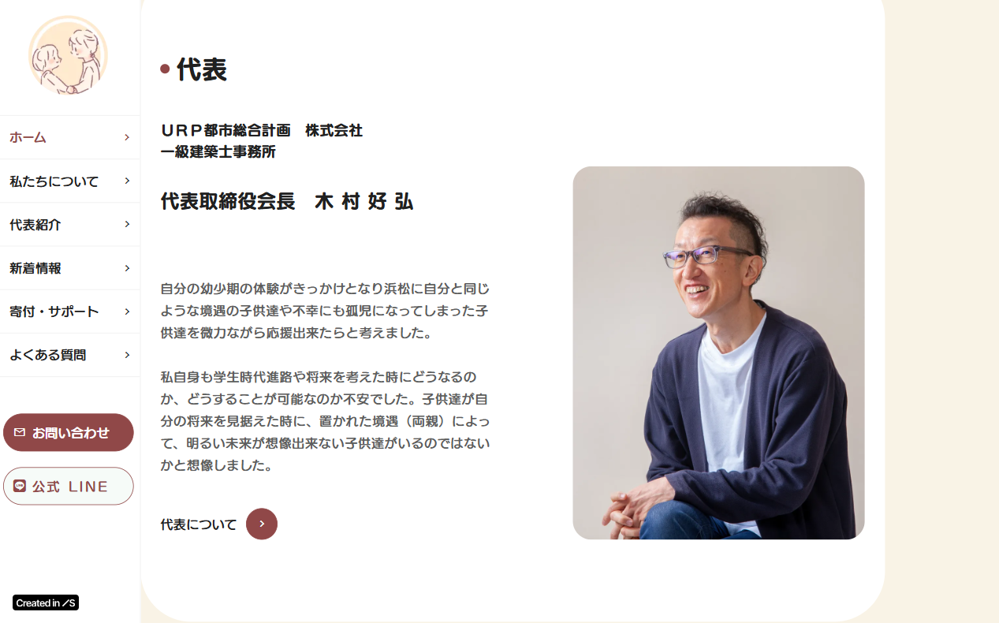
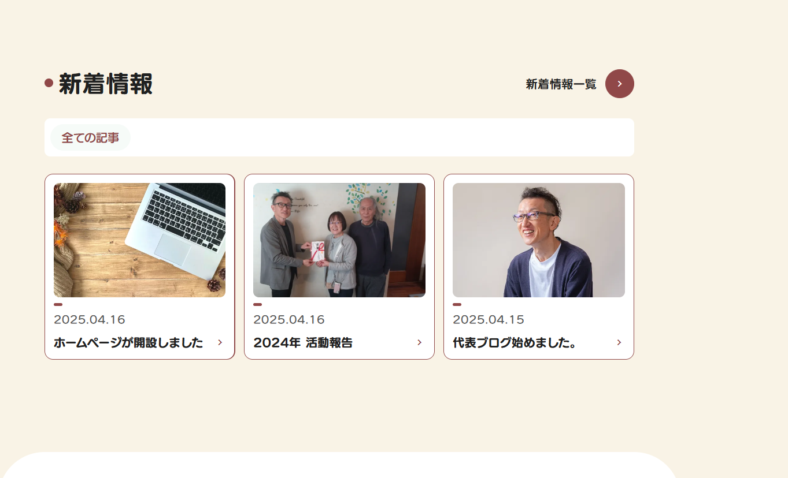
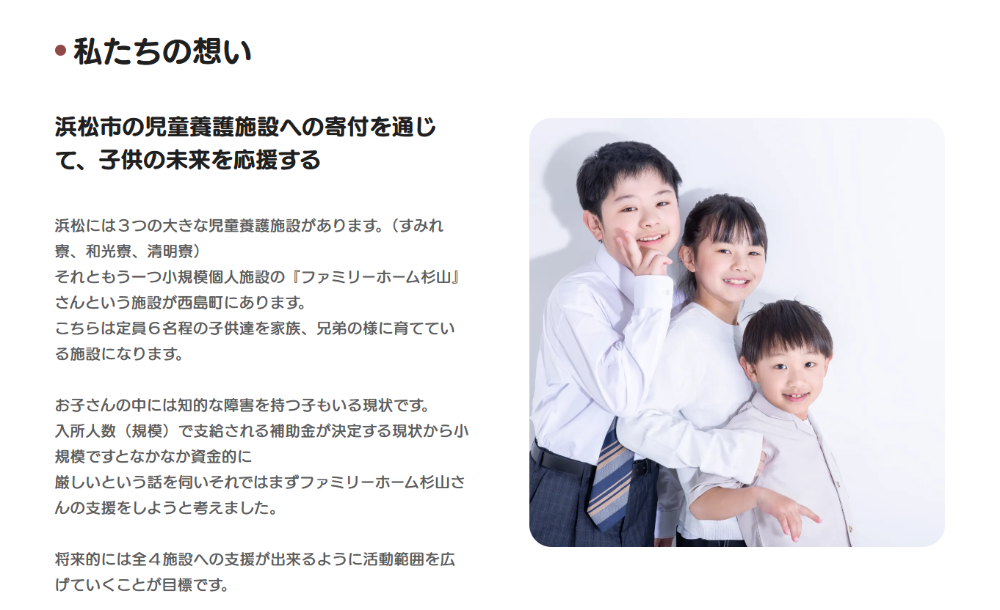
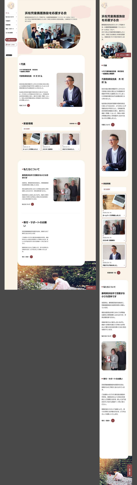

About
制作の目的
浜松児童養護施設を応援する会のHP制作のお仕事を行いました。クライアント様が短期での納品を希望するため、Studioのテンプレートを使用し短期間でデザイン性の高いサイトを作成しました。
Process
デザインプロセス
クライアント様と打ち合わせを行い、ご満足いただけるようなデザインを作成しました。福祉施設のため柔らかく優しいイメージを表現して欲しいとのことで、意識して制作しました。
Tool
使用技術
- Studio (CMS、テンプレート)
- Adobe Photoshop, Illustrator (デザイン作成)
デザインのポイント
福祉施設のため、クリーム色#F9F3E6をメインカラーとし茶色#904848をアクセントカラーとすることで柔らかく優しいイメージを表現しました。



Webサイトの機能
Studioにデフォルトで搭載されているCMS機能を使うことでプログラミングの知識がない方でも、ブログの更新などが簡単に行えます。クライアント様のご要望からお問い合わせフォームを実装しました。
Visual
URL: https://hamamatsujidouyougo000.studio.site/
